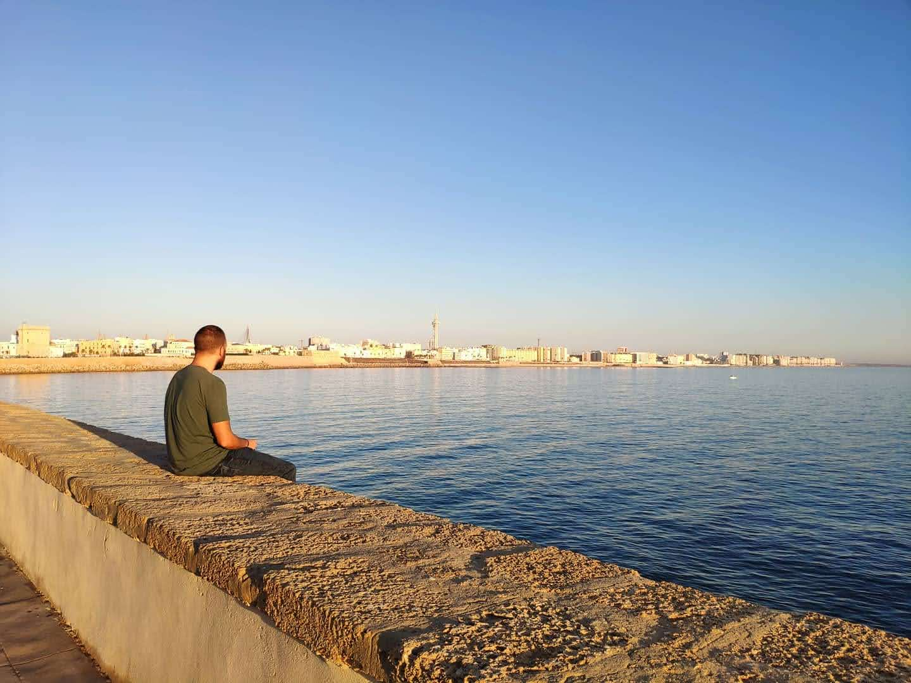

Bienvenido a Cádiz
Cádiz, tacita de plata,
la isla encerrada
entre el viento y el mar,
la de las calles estrechas,
la de la Alameda
pintada de azul.
Cádiz, la de las barquillas
que inundan la orilla
de todas sus playas,
la de la Caleta,
la de la caballa
de sangre y de sal,
la de la Catedral
convertida en la Plaza,
la de la libertad
convertida en las flores,
la de tanto dolor
convertido en la gracia,
la del tiempo que pasa
y que deja pasar,
la que se pone a cantar
para olvidar
por carnavales,
la que con la bajamar
hace un altar
como le sale,
la que abre el puente canal
para que salgan to' sus males.
Cádiz, la novia del cante,
la amante del Sur,
la del poniente,
la de en la calle la gente
sencilla pero importante,
la pobre pero elegante
ciudad de nuestra salud.
Cádiz, tacita de plata,
más de plata que tacita,
la que siempre resucita
por más veces que se muera,
la del árbol milenario
la del barco de La Habana,
la que por cada mañana
hace el día a su manera.
Cádiz, la del horizonte
con el sol abandonando,
la del vino derramado
en la tumba del dinero,
la de sirenas de Astilleros,
la del amor en cada barquito de vela,
la de torres centinelas
echas de piedras mayores
para que sus miradores
pasen las noches en vela.
Cádiz no hay más que decir,
no hay más ciudad en el mundo,
ni mundo más grande y con más alegría
que si volviera a nacer
volvería a vivir, a morir y a perder
en la tierra mía.
Juan Carlos Aragón Becerra,
Comparsa Los Millonarios,
Primer premio del año 2015